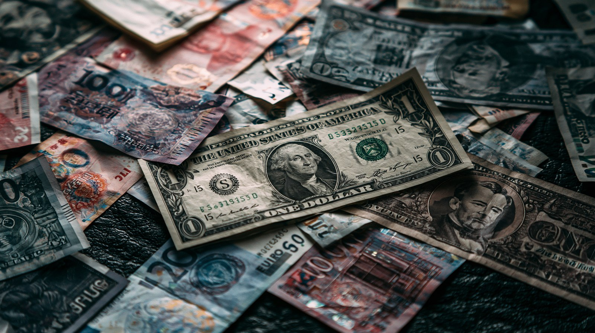

01 数字が示す構造変化
「脱ドル」はこれまで主に政治的なスローガンだった。だが2025〜2026年、それは統計に表れる構造変化へと変わった。 ドルが世界の公的外貨準備に占める割合は56.9%（2025年第3四半期）へ低下し、1995年以来初めて57%を割り込んだ。 2001年のピークである72%から、長期的に低下し続けている。
象徴的なのが準備資産の逆転だ。欧州中央銀行の報告によれば、2025年末に金が世界の中銀準備資産の27%を占め、 米国債（22%）を上回った。外国中銀が保有する金の価値は約4兆ドルに達し、米国債（約3.9兆ドル）を超えた——これは1996年以来のことだ。
ただし「低下」は「崩壊」ではない。57%は依然として他のどの通貨も足元に及ばない圧倒的な水準だ。問われているのは、王座が揺らぐ速度である。
02 何が脱ドルを駆動するのか
03 タイムライン — 直近の動き
制裁を機に中銀の金買いが加速
ロシアの外貨準備凍結を受け、各国中銀は年1,000トン超の金を買い増す異例の局面に。ドル一極への依存を見直す動きが本格化した。
トランプ、BRICSに「100%関税」を威嚇
トランプは、ドルを脅かすならBRICS諸国に100%の関税を課すと警告。「BRICSは我々のドルを潰すために作られた」と述べ、通貨を安全保障の問題として明確に位置づけた。
ドルの準備シェアが57%割れ — 30年ぶり
ドルの公的準備シェアが56.9%へ低下し、1995年以来初めて57%を割り込んだ。緩やかだが一貫した低下トレンドが改めて確認された。
中国、人民元ステーブルコインを検討
中国は上海協力機構の枠組みなどで、人民元建てステーブルコインやデジタル人民元の越境利用を議論。デジタル領域での通貨競争が新たな戦線に。ただし人民元の国際決済シェアは2.88%にとどまる。
金が米国債を抜き、準備資産の第2位に
欧州中央銀行が、2025年末に金（27%）が米国債（22%）を上回ったと報告。外国中銀の金保有額が米国債を超えるのは1996年以来。象徴的な「世代の転換点」となった。
「多極化」だが「覇権交代」ではない
脱ドルは進むが、代わる基軸通貨は不在。BRICS共通通貨は実質停滞し、インドは「脱ドルを志向したことはない」と明言。緩やかな多極化への移行という見方が主流だ。

04 各立場の主張
| 立場 | 基本姿勢 | 主な手段 | 弱点・限界 |
|---|---|---|---|
| アメリカ | ドル覇権の防衛 | 関税の威嚇・ステーブルコイン | 制裁多用が脱ドルを誘発 |
| 中国 | 人民元の国際化 | CIPS・現地通貨・デジタル人民元 | 決済シェア2.88%・資本規制 |
| ロシア・イラン | 制裁回避・急進 | SWIFT迂回・現地通貨・金 | 経済規模が小さい |
| 新興国 | 分散・ヘッジ | 現地通貨決済・金の積増し | 一枚岩でない・共通通貨停滞 |
| 市場・国際金融 | 多極化だが交代せず | ―（分析） | 代替通貨の不在 |
05 データ・統計
ドルの公的外貨準備シェアの推移
2001年72% → 2025年56.9%へ。出典: IMF COFER / 各種報道
世界の中銀準備資産の構成（2025年末）
金が米国債を逆転（1996年以来）。出典: 欧州中央銀行 2026
国際決済シェア（通貨別・2025年）
人民元はドルに遠く及ばない。ユーロは参考値。出典: SWIFT 2025